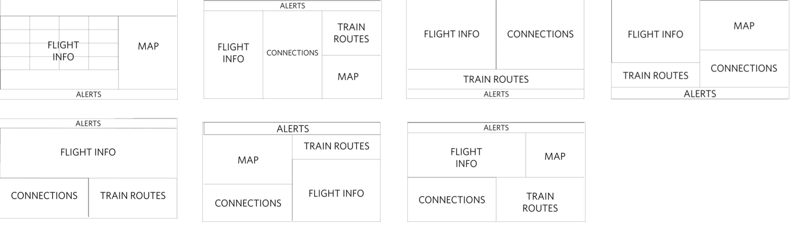
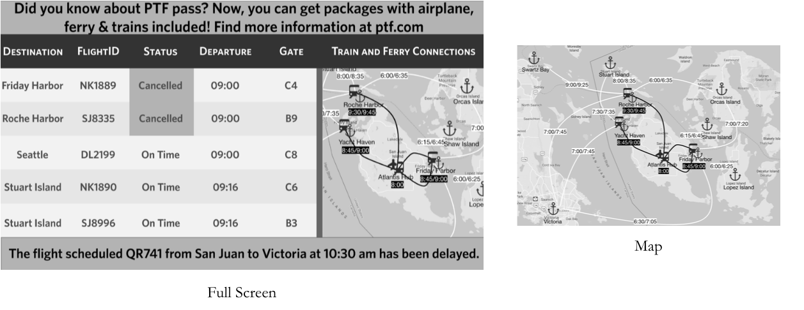
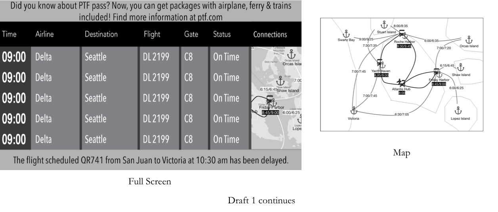
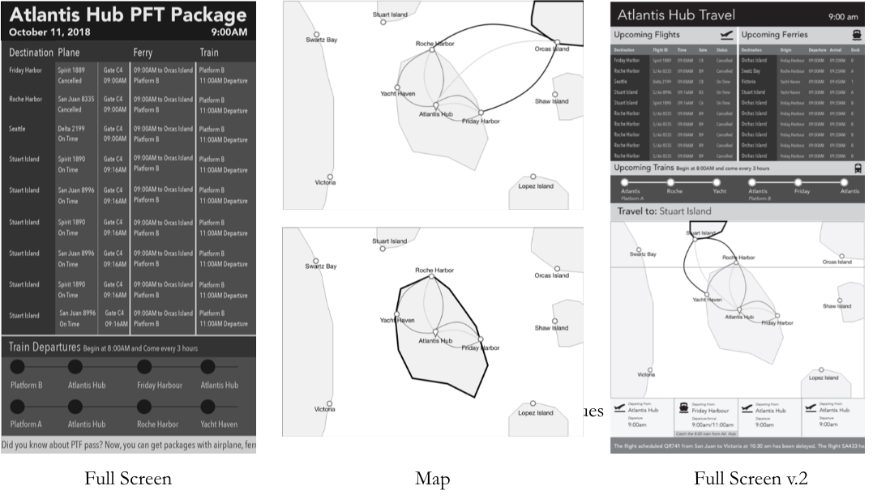
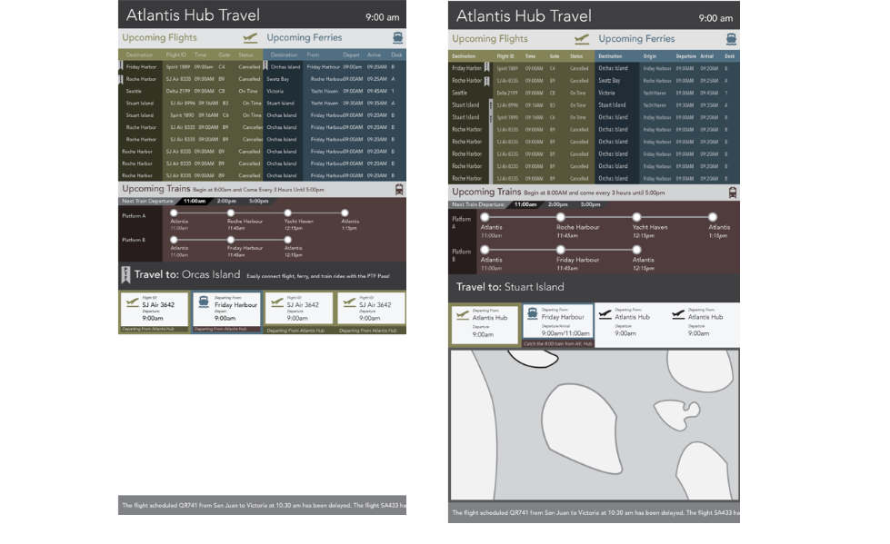
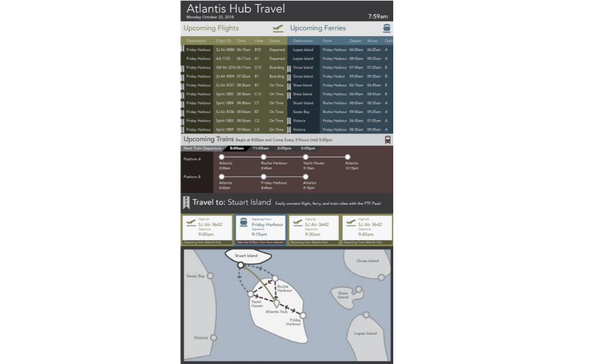

Paper Sketching
We began the design process by making thumbnail sketches. The sketches were focusing on the selection, grouping and display of the data.

Draft 1
For draft 1, we attempted to do a divide and conquer technique, asking each person to deeply explore one section of the map. We had trouble combining the individual parts into a cohesive whole and learned very quickly that we needed to explore the data more deeply together.


Draft 2
We initially began by abstracting the different items, exploring how we could highlight the connections visually. We moved to a more abstract creation of the map and explored more condensed tables.

We compiled a more condensed table and abstract map, choosing to use the top half of the screen to display all trip information and the bottom half of the screen to highlight each island. Through this highlighting, we wanted to explicitly showcase the PFT Pass and connections from one type of transportation to the other. Once we viewed this on the screen in class, we realized that certain elements needed to be rearranged and de-emphasized in order to promote the correct relationships for the viewer. For instance, the trip presented at the bottom of the screen and intended to inform viewers ways to get to Stuart Island, but instead appear to be current trips.
Draft 3
In draft 3, we introduced color, attempting to use it as a way to differentiate the types of travel information (green for planes, blue for ferries, and red for trains). We struggled most with how to create a map that was clear enough to communicate the different transportation opportunities while also communicating the geographic relationships. We also began experimenting with different ways to represent the PFT Pass

Draft 4
We refined our design and focused on a new type of flagging method to denote PFT Pass eligible rides. We also finalized our map design. Additionally, we began adding in animations. We received feedback that the animations should be a little more commuicative to the viewer, letting them know when screens might be about to change. Additionally, the bottom half or the screen had some unclear relationships to the top half. In our next and final draft, we attempted to rectify just that.
